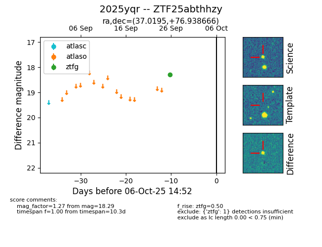

FINK: ZTF25abthhzy
Lasair: ZTF25abthhzy
ALeRCE: ZTF25abthhzy
TNS: 2025yqr
YSE: 2025yqr
ZTF25abthhzy (ztf,fink)
2025yqr (tns,yse)
equatorial (ra, dec) = (37.0195,+76.93867)
galactic (l, b) = (128.4298,+15.11000)

last ztfg=18.29
1 ztfg detections